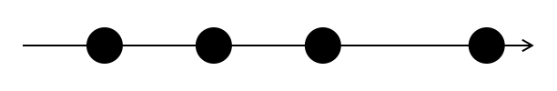
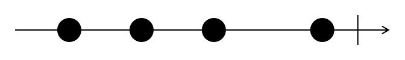
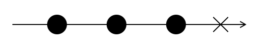
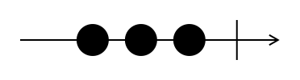
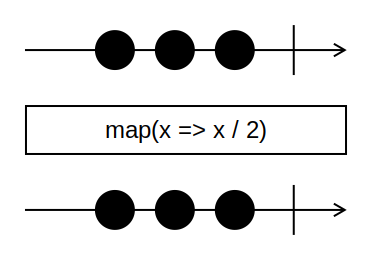

Observables, observadores y sujetos
Programación Declarativa Aplicada
Máster en Ingeniería Informática
Facultad de Informática
Universidad Complutense de Madrid
Máster en Ingeniería Informática
Facultad de Informática
Universidad Complutense de Madrid
- Creación de observables
- Tipos de observables
- Suscripciones a un observable
- Sujetos
Creación de observables
¿Qué es un observable?
- Un observable es una entidad que emite elementos a uno o varios observadores suscritos.
- Representamos los valores emitidos por un observable a lo largo del tiempo mediante un diagrama de canicas (marble diagram):

¿Qué es un observable?
- Un observable puede emitir la notificación de completado (completed) cuando ha finalizado la secuencia de valores a emitir.

- Si se produce un error durante la emisión de valores, puede emitirse una notificación de error.

Creación de un observable
- Ya hemos visto funciones de RxJS destinadas a crear observables a partir de una lista de elementos:
of(x1, ..., xn)from(xs)
- Otra forma de crear observables consiste en el uso del constructor de la clase
Observable.
Constructor de Observable
- El constructor de
Observablerecibe una función como parámetro. - Esta función es la que se encarga de emitir los valores a los suscriptores.
- La función pasada como parámetro recibe, a su vez, un objeto con tres métodos:
next(v), para emitir un valorv;complete(), para emitir la notificación completado;error(e), para emitir una notificación de error.
Ejemplo
const obsEjemplo$ = new Observable(s => {
s.next(10);
s.next(20);
s.next(30);
s.complete();
});

Ejemplo
- Con el observable ya creado, podemos utilizar el método
subscribepara determinar las acciones a realizar con cada valor recibido,obsEjemplo$.subscribe(x => console.log(`Recibido: ${x}`)); - o bien, podemos utilizar los operadores ya conocidos:
obsEjemplo$.pipe(map(x => x / 2))

Tipos de observables
Tipos de observables
- Observables «fríos» - (cold observables)
- Para cada observador, existe un productor que proporciona los eventos al observador.
- Cuando un observador se suscribe, obtiene todos los eventos del observable.
- Observables «calientes» - (cold observables)
- Existe un único productor que emite los eventos, y cada observador obtiene los eventos emitidos a partir del momento en el que comienza a observar.
Observables fríos y calientes
Let’s compare watching a movie on Netflix to going into a movie theater. Think of yourself as an observer. Anyone who decides to watch Mission: Impossible on Netflix will get the entire movie, regardless of when they hit the play button. Netflix creates a new producer to stream a movie just for you. This is a cold observable.
If you go to a movie theater and the showtime is 4 p.m., the producer is created at 4 p.m., and the streaming begins. If some people (subscribers) are late to the show, they miss the beginning of the movie and can only watch it starting from the moment of arrival. This is a hot observable.
Yakov Fain and Anton Moiseev
Angular Development with TypeScript (Manning)
Observables fríos: ejemplo
- Los observables creados mediante
ofson fríos:import { of } from 'rxjs'; const obs$ = of(10, 20, 30); - El observable
obs1$emite los valores cada vez que se suscribe un observador:obs$.subscribe(x => console.log(`Observador 1 recibe: ${x}`)); // Imprime: Observador 1 recibe 10 // Observador 1 recibe 20 // Observador 1 recibe 30 obs$.subscribe(x => console.log(`Observador 2 recibe: ${x}`)); // Imprime: Observador 2 recibe 10 // Observador 2 recibe 20 // Observador 2 recibe 30
Observables fríos: ejemplo
- El siguiente observable, creado mediante el constructor
Observable, también es frío:const obs$ = new Observable(s => { console.log('Generando: 10'); s.next(10); console.log('Generando: 20'); s.next(20); console.log('Notificando fin de secuencia'); s.complete(); });
Observables fríos: ejemplo
- Cada vez que se suscribe un observador, se ejecuta la función pasada como parámetro al constructor de
Observable.
obs$.subscribe(x => console.log(`Observador 1 recibe: ${x}`));
console.log('---');
obs$.subscribe(x => console.log(`Observador 2 recibe: ${x}`));
Generando: 10
Observador 1 recibe: 10
Generando: 20
Observador 1 recibe: 20
Notificando fin de secuencia
---
Generando: 10
Observador 2 recibe: 10
Generando: 20
Observador 2 recibe: 20
Notificando fin de secuencia
Observables fríos
- Los observables creados mediante
intervaltambién son fríos:const obs$ = interval(1000); // Se suscribe un observador: obs$.subscribe(x => console.log(`Suscriptor 1 recibe ${x}`)); // 3.5 segundos después, se suscribe otro: setTimeout(() => { obs$.subscribe(x => console.log(`Suscriptor 2 recibe ${x}`)); }, 3500);Suscriptor 1 recibe 0 Suscriptor 1 recibe 1 Suscriptor 1 recibe 2 Suscriptor 1 recibe 3 Suscriptor 2 recibe 0 Suscriptor 1 recibe 4 Suscriptor 2 recibe 1 Suscriptor 1 recibe 5
Operador share()
- Convierte un observable frío en uno caliente.
- El observable resultante comienza a emitir eventos cuando se conecta el primer observador.
const obs$ = interval(1000).pipe(share());
obs$.subscribe(x => console.log(`Suscriptor 1 recibe ${x}`));
setTimeout(() => {
obs$.subscribe(x => console.log(`Suscriptor 2 recibe ${x}`));
}, 3500);
Suscriptor 1 recibe 0
Suscriptor 1 recibe 1
Suscriptor 1 recibe 2
Suscriptor 1 recibe 3
Suscriptor 2 recibe 3
Suscriptor 1 recibe 4
Suscriptor 2 recibe 4
Suscriptor 1 recibe 5
Suscripciones a un observable
Suscribirse a un observable
- Ya conocemos el método
subscribede los observables. - Este método recibe una función callback que será invocada cada vez que el observable emita un evento.
const obs$ = of(1, 2, 3);
obs$.subscribe(x => console.log(`Recibido ${x}`));
Suscribirse a un observable
- El método
suscribetambién admite un observador como parámetro. - En este caso, un observador es un objeto con tres funciones callback:
next(v), llamada cuando el observable emite un valorv.complete(), llamada cuando el observable notifica el fin de la secuencia.error(e), llamada cuando el observable notifica un error.
Ejemplo
const obs$ = of(10, 20, 30);
const observador = {
next: x => { console.log(`He recibido el valor ${x}`); },
complete: () => { console.log(`Ya no recibo más eventos`); },
error: err => {
console.log(`Se ha producido un error: ${err.message}`);
}
}
obs$.subscribe(observador);
He recibido el valor 10
He recibido el valor 20
He recibido el valor 30
Ya no recibo más eventos
Suscripciones
- El método
subscribe()devuelve un objeto de la claseSubscription. - Este objeto tiene un método
unsuscribe()que permite anular la suscripción del observador registrado.
Ejemplo
const obs$ = interval(1000);
const suscripcion = obs$.subscribe((x) => {
console.log(`Recibido: ${x}`);
if (x >= 3) {
console.log('Cancelando suscripción');
suscripcion.unsubscribe();
}
});
Recibido: 0
Recibido: 1
Recibido: 2
Recibido: 3
Cancelando suscripción
Sujetos
Sujetos
- La manera más habitual de crear observadores calientes es mediante el uso de sujetos (subjects).
- Un sujeto actúa como un observable, y permite emitir eventos a más de un observador.
- La clase
Subjecthereda deObservable. Es decir, todo sujeto es un observable.- Por tanto, los sujetos tienen un método
subscribe()y un métodopipe()que permite aplicar los operadores vistos hasta ahora.
- Por tanto, los sujetos tienen un método
Métodos de la clase Subject
- Métodos de suscripción:
subscribe(): añade un nuevo observador al subjeto.
- Métodos de notificación:
next(v): notifica la emisión de un valorv.complete(): notifica la finalización de emisión de eventos.error(e): notifica un errore.
Ejemplo
- Creamos un sujeto y dos observadores que se suscriben a él:
const suj$ = new Subject(); function crearObservador(id) { return { next: x => { console.log(`Observador ${id} recibe ${x}`); }, complete: () => { console.log(`Observador ${id} recibe finalización`); }, error: () => { console.log(`Observador ${id} recibe error ${e.message}`); } }; } suj$.subscribe(crearObservador('A')); suj$.subscribe(crearObservador('B'));
Ejemplo
- Cada vez que llamamos al método
nextdel sujeto, los observadores imprimen el mensaje correspondiente:suj$.next(10); // Imprime: Observador A recibe 10 // Imprime: Observador B recibe 10 suj$.next(20); // Imprime: Observador A recibe 20 // Imprime: Observador B recibe 20 suj$.next(30); // Imprime: Observador A recibe 30 // Imprime: Observador B recibe 30 suj$.complete(); // Imprime: Observador A recibe finalización // Imprime: Observador B recibe finalización
Sujetos
- Cuando un observador se suscribe después de que el observable haya empezado a emitir eventos, el observador no recibe los eventos anteriores a la suscripción:
const suj$ = new Subject(); suj$.next(10); suj$.next(20); suj$.subscribe(crearObservador('A')); suj$.next(30); // Imprime: Observador C recibe 30 suj$.complete(); // Imprime: Observador C recibe finalización
La clase BehaviorSubject
- Los sujetos de esta clase proporcionan a los nuevos observadores el último valor emitido antes de la suscripción.
const suj$ = new BehaviorSubject(0); // 0 es el valor inicial
suj$.subscribe(crearObservador('A'));
// Imprime: Observador A recibe 0
suj$.next(10);
// Imprime: Observador A recibe 10
suj$.subscribe(crearObservador('C'));
// Imprime: Observador C recibe 10
suj$.complete();
// Imprime: Observador A recibe finalización
// Imprime: Observador C recibe finalización
Otros tipos de sujetos
ReplaySubject(n)- Proporciona a los nuevos observadores los últimos
neventos emitidos por eltt sujeto antes de la suscripción.
- Proporciona a los nuevos observadores los últimos
AsyncSubject- Solamente proporciona un valor a los observables, que es el último que evento que se emitió antes de la notificación de completado.
Bibliografía
- RxJS
Documentación oficial
https://rxjs.dev/ -
Sergi Mansilla
Reactive Programming with RxJS 5
https://ucm.on.worldcat.org/oclc/1345473207